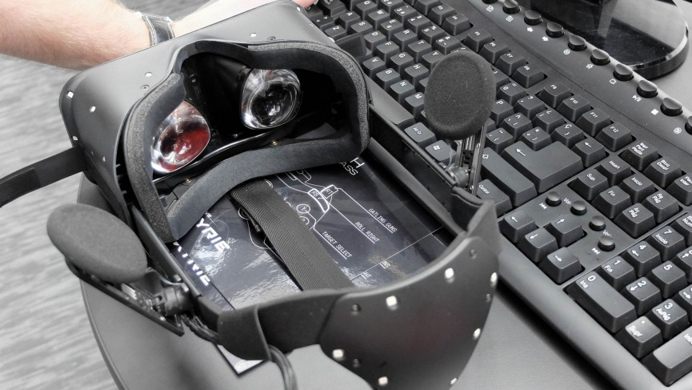

VR headsets like Oculus Rift and PlayStation VR are often referred to as HMDs and all that means is that they are head mounted displays. Even with no audio or hand tracking, holding up Google Cardboard to place your smartphone's display in front of your face can be enough to get you half-immersed in a virtual world.
The goal of the hardware is to create what appears to be a life size, 3D virtual environment without the boundaries we usually associate with TV or computer screens. So whichever way you look, the screen mounted to your face follows you. This is unlike AR which overlays graphics onto your view of the real world.
Video is sent from the console or computer to the headset via a HDMI cable in the case of headsets such as HTC's Vive and the Rift. For Google Cardboard,Google's upcoming Daydream headsets and the Samsung Gear VR, it's already on the smartphone slotted into the headset.
VR headsets use either two feeds sent to one display or two LCD displays, one per eye. There are also lenses which are placed between your eyes and the pixels which is why the devices are often called goggles. In some instances, these can be adjusted to match the distance between your eyes which varies from person to person.
These lenses focus and reshape the picture for each eye and create a stereoscopic 3D image by angling the two 2D images to mimic how each of our two eyes views the world ever-so-slightly differently. Try closing one eye then the other to see individual objects dance about from side to side and you get the idea behind this.


One important way VR headsets can increase immersion is to increase the field of view i.e. how wide the picture is. A 360 degree display would be too expensive and unnecessary. Most high-end headsets make do with 100 or 110 degree field of view which is wide enough to do the trick.
And for the resulting picture to be at all convincing, a minimum frame rate of around 60 frames per second is needed to avoid stuttering or users feeling sick. The current crop of VR headsets go way beyond this - Oculus is capable of 90fps, for instance, Sony's PlayStation VR manages 120fps.